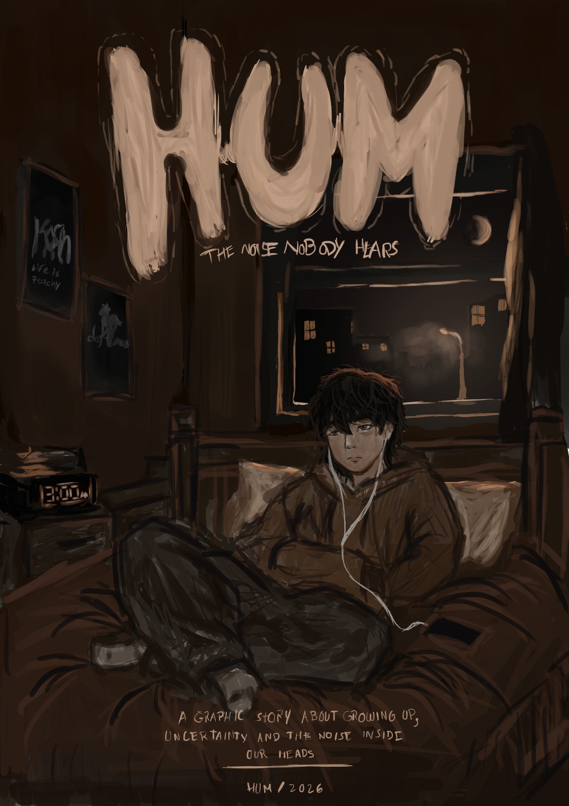

01
3:07 AM
El insomnio
La pantalla encendida en la oscuridad y el primer choque con los pensamientos flotantes.
«Tal vez nunca se trató de apagar el ruido. Tal vez se trataba de entender qué estaba tratando de decir.»

Una exploración visual sobre el ruido mental y la presión juvenil.
HUM es una novela gráfica enfocada en los pensamientos automáticos, la ansiedad social y el peso de las expectativas en la etapa escolar.
A través del viaje introspectivo de Nico (16 años), la obra transforma sensaciones abstractas —como el sobrepensamiento o la parálisis por el futuro— en elementos visuales, atmósferas nocturnas y diálogos cotidianos.
La pantalla encendida en la oscuridad y el primer choque con los pensamientos flotantes.
El contraste entre el bullicio de los pasillos y el aislamiento interno de quien no sabe qué sigue.
La música indie y grunge como la única herramienta para aislar la mente durante la caminata a casa.